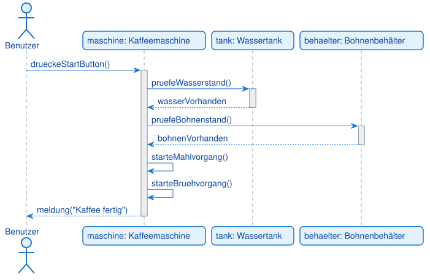

Aufgabe A1 [leicht]: Kaffeemaschine
Szenario: Ein Benutzer möchte an einer automatischen Kaffeemaschine einen Kaffee zubereiten:
- Der Benutzer drückt den Start-Button.
- Die Kaffeemaschine prüft den Wasserstand im Wassertank.
- Der Wassertank meldet zurück, dass genug Wasser vorhanden ist.
- Die Kaffeemaschine prüft den Bohnenstand im Bohnenbehälter.
- Der Bohnenbehälter meldet zurück, dass genug Bohnen vorhanden sind.
- Die Kaffeemaschine startet Mahl- und Brühvorgang (zwei Selbstaufrufe).
- Die Kaffeemaschine meldet: "Kaffee fertig".
Modelliere ein Sequenzdiagramm mit den Teilnehmern Benutzer (Akteur), Kaffeemaschine, Wassertank und Bohnenbehälter. Verwende ausschließlich synchrone Nachrichten und Aktivierungsbalken.
Musterlösung

@startuml
actor Benutzer
participant "maschine: Kaffeemaschine" as Maschine
participant "tank: Wassertank" as Tank
participant "behaelter: Bohnenbehälter" as Behaelter
Benutzer -> Maschine: drueckeStartButton()
activate Maschine
Maschine -> Tank: pruefeWasserstand()
activate Tank
Tank --> Maschine: wasserVorhanden
deactivate Tank
Maschine -> Behaelter: pruefeBohnenstand()
activate Behaelter
Behaelter --> Maschine: bohnenVorhanden
deactivate Behaelter
Maschine -> Maschine: starteMahlvorgang()
Maschine -> Maschine: starteBruehvorgang()
Maschine --> Benutzer: meldung("Kaffee fertig")
deactivate Maschine
@enduml
Alle Nachrichten sind synchron, weil jeder Schritt auf das Ergebnis des vorherigen wartet.
Die beiden Selbstaufrufe (starteMahlvorgang, starteBruehvorgang) zeigen interne Abläufe der
Kaffeemaschine, ohne dass ein anderes Objekt beteiligt ist.